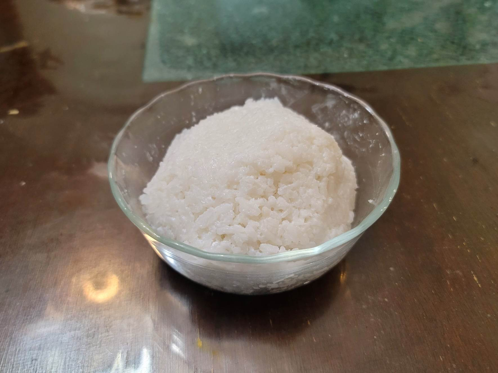

Alaisa Fa'apopo

Ingredients:
- 2 1/2 cups Rice
- 3 cups Water
- 1 tsp Salt, or to taste
- 1 400ml can Coconut cream
Instructions:
- Rinse and wash the rice. Then add the rice, water, and salt to a pot. Bring the water to a boil and then reduce to low. Let cook for about 10 minutes or until the rice is comepletely cooked.
- With the heat still on low, slowly add in some coconut cream while mashing the rice lightly. Continue until all the cream in incorporated, adding salt to taste if needed.
- Remove from the heat and serve hot.